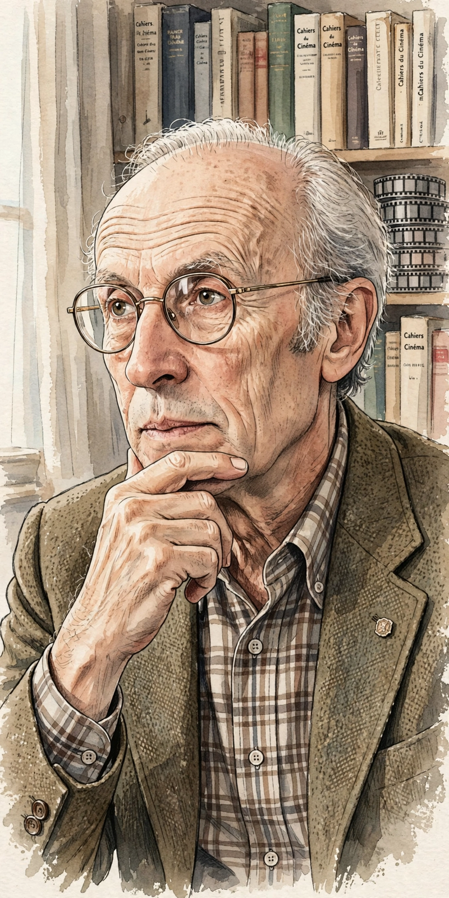

| Éric Rohmer | |
|---|---|
 Rohmer, a leading figure of the French New Wave | |
| Born | Maurice Henri Joseph Schérer, 21 March 1920, Tulle, France |
| Died | 11 January 2010 (aged 89), Paris, France |
| Occupation | Film director, critic, novelist |
| Known for | Six Moral Tales; Comedies and Proverbs; Tales of the Four Seasons |
| Associated with | Cahiers du Cinéma, French New Wave |
Éric Rohmer (French: [eʁik ʁomɛʁ]; born Maurice Henri Joseph Schérer, 21 March 1920 – 11 January 2010) was a French film director, film critic, and novelist, and a central figure of the French New Wave. Editor of Cahiers du Cinéma from 1957 to 1963, he directed a distinctive body of films organised into thematic cycles, exploring love, chance, and moral choice through extended conversation.
Rohmer began as a teacher of literature and, under his pen name, became a critic at Cahiers alongside Claude Chabrol and Jacques Rivette, defending classical Hollywood directors such as Howard Hawks under the influence of critic André Bazin. With Chabrol he co-wrote a landmark 1957 study of Alfred Hitchcock. His first feature, The Sign of Leo (1959), was a commercial failure, and success came only with the Six Moral Tales: My Night at Maud's (1969), Claire's Knee (1970), and Love in the Afternoon (1972).
Rohmer followed the Moral Tales with the Comedies and Proverbs of the 1980s — including Pauline at the Beach (1983) and The Green Ray (1986), which won the Golden Lion at Venice — and the Tales of the Four Seasons in the 1990s. Working with small crews, natural light, and largely non-professional or recurring actors, he maintained an economical, literary style into his eighties, ending his career with The Romance of Astrea and Celadon (2007).
Rohmer's films are admired for their intelligence, verbal wit, and moral ambiguity; his characters talk their way toward decisions they often fail to take. He received the Golden Lion for lifetime achievement at Venice in 2001.